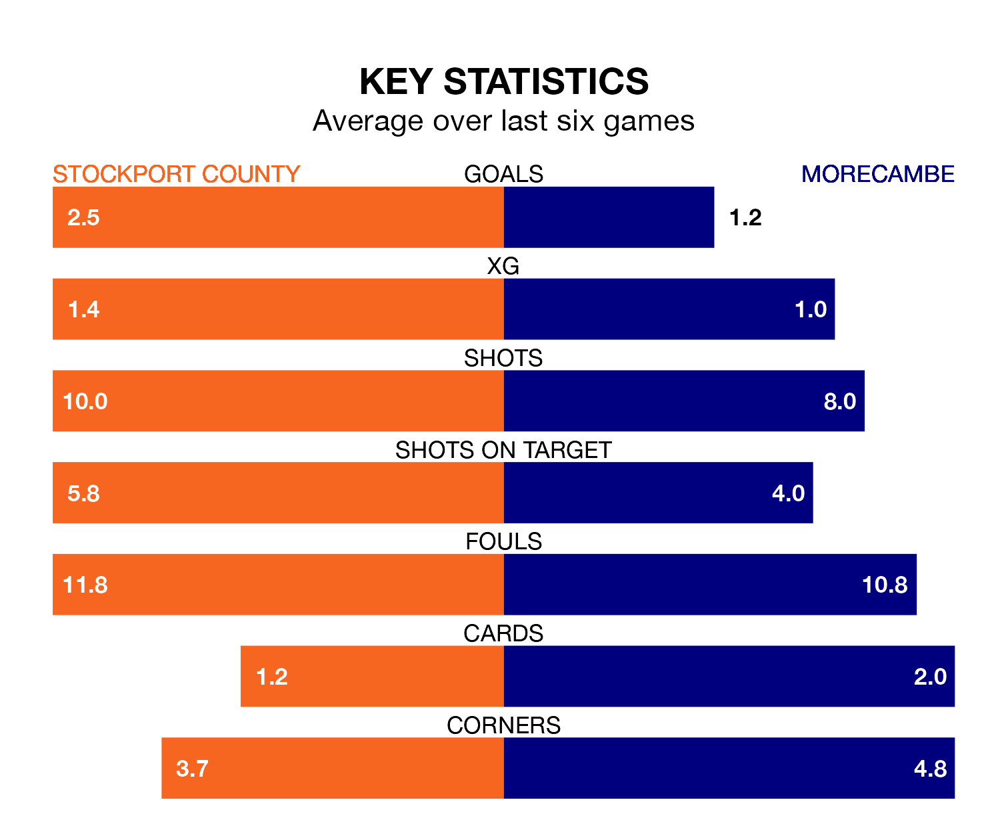

Stockport County are heavy favourites to keep all three points at home in Saturday's kick-off against Morecambe.
The Hatters, who sit top of EFL League Two with 42 games played, are priced at 1.4 to seal victory at Edgeley Park.
Sitting 11 places and 23 points behind them in the table, Morecambe are 7.2 to win with *Betting Company*, while the draw is at 5.2.
With 84 goals in 42 games so far this season, Stockport are the league's highest scorers with 2.0 goals per game. And they are conceding fewer than average, letting in 42 goals at a rate of 1.0 per game.
Morecambe, meanwhile, are average scorers, with 1.5 goals per game. They have conceded 1.7 goals per game.
In Ben Hinchiffe, County can rely on one of the league's safest pair of hands. He has kept 16 clean sheets in his 42 appearances this season, and no 'keeper has prevented the opposition scoring more often in EFL League Two.
In the Shrimps's net, Stuart Moore has three clean sheets in 12 games. He has conceded a goal every 74 minutes, 30% more often than the 95 minutes between goals for Hinchiffe.
The Hatters are in fantastic form in EFL League Two, with five wins and a draw from their last six games.
With two wins and four losses over that period, the visitors' form is much worse – they have taken six points from 18, compared to the home team's 16.
Stockport's last match was on Tuesday, a 2-1 win against Colchester United, with Nick Powell and Paddy Madden getting the goals for the Hatters.
Morecambe lost 1-0 against Crewe Alexandra last time out, also on Tuesday.
Saturday's match will be refereed by Lee Swabey, who has taken charge of nine EFL League Two games so far this season, issuing two red cards and booking 28 players. He has awarded two penalties.
The last Stockport game Swabey refereed was a 0-0 away draw with Gillingham on February 20. He is yet to oversee a match featuring Morecambe this season.
Updated: 10:01 (UTC), 12/04/24